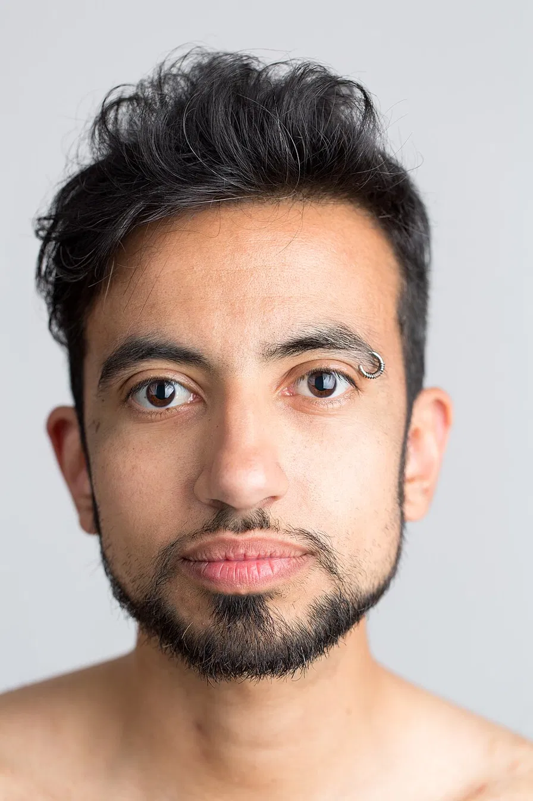
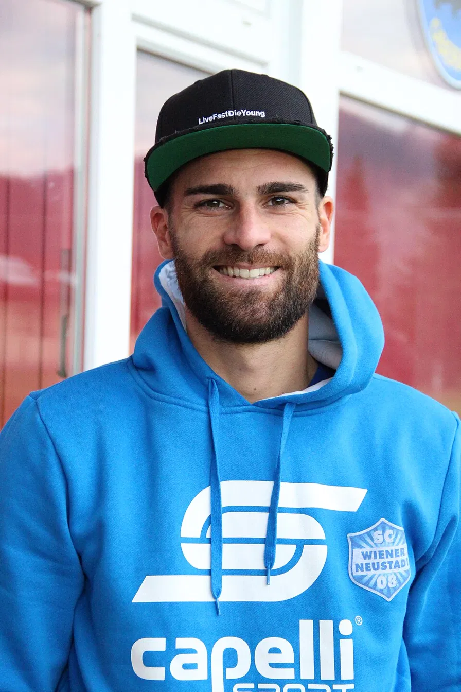
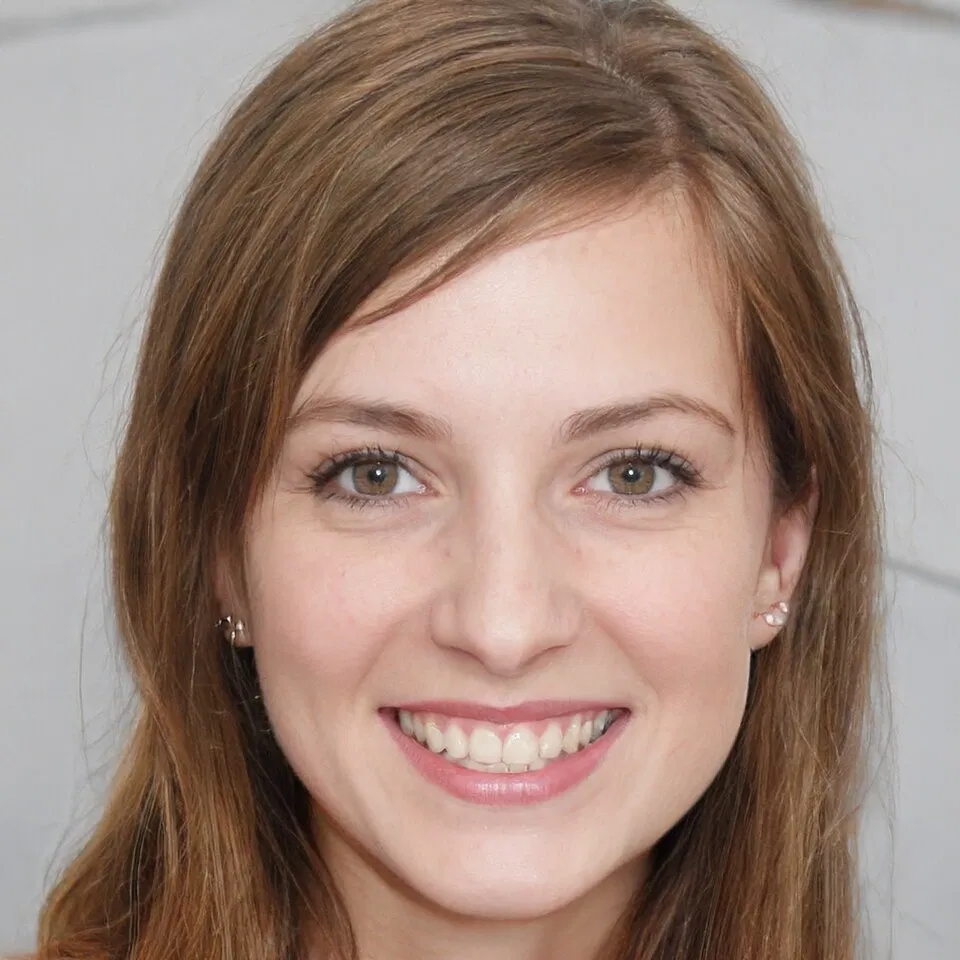
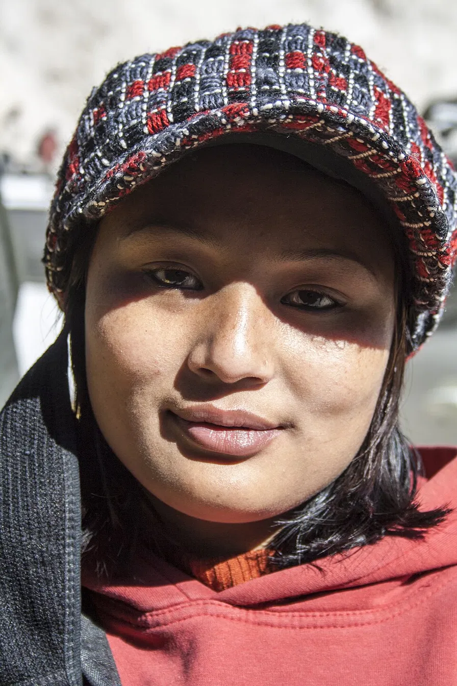

The people behind Nova Collective.

Marco has spent twelve years in brand strategy. Before he started leading the creative team at Nova, he worked as an art director at studios in Mexico City and Berlin. His approach is pretty simple: he uses fewer elements to help ideas stand out more. When he is not working, he spends his time doing pottery and says the two fields are actually quite similar.

Daniel began his work with electronics from a young age in Vienna. These days he works as head of the engineering department at Nova. This certainly does not imply that he is always busy with it. On the contrary, he may be busy day and night working on some new web-based system. Regardless of that, he also is perfectly capable of handling tough situations and explaining things to clients without being a programmer himself.

Sophie's degree in cognitive psychology influences her approach to design challenges; she always asks "what do people need?" instead of "what do people think they need?" She directs Nova's research practice and leads interviews, usability studies and workshops to ground the team in actual behaviour. She keeps a small telescope in her office.

Priya has spent her life living and working on three continents, which developed her intensely compassionate style of communication. She manages content strategy at Nova, guiding clients through their options to find the most transparent and truthful version of their story. She's writing her debut book of essays on place and belonging.